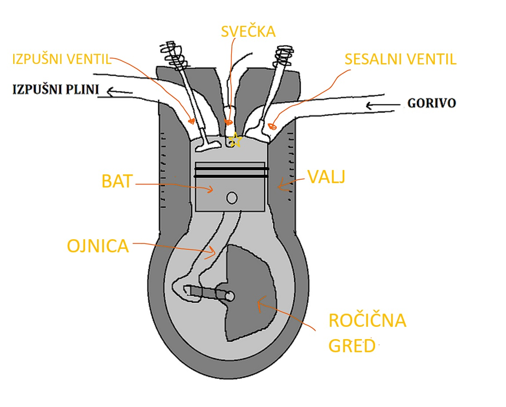

MOTORJI Z NOTRANJIM ZGOREVANJEM
V osnovi imata tipa motorja, predstavljena na tej spletni strain, sledeče sestavne dele.
Svečka je za mezinec velik del izdelan iz keramike in kovine. Naloga svečke je ustvariti iskro, ki vžge mešanico goriva in zraka.
Sesalni in izpušni ventil sta zadolžena za dovod mešanice zraka in goriva ter odvajanje izpušnih plinov ven iz motorja.
Bat motorja drsi gor in dol po valju. Skupaj tvorita zgorevalno komoro, v kateri se dogajajo eksplozije. Pomembno je, da se bat valju tesno prilega in lepo drsi po njem. Prostornina motorja je prostornina med najvišjo in najnižjo lego bata v valju, pomnoženo s številom valjev v motorju.
Ojnica in ročična gred skupaj pretvarjata vertikalno gibanje bata v krožno gibanje gredi. Ročična gred ima težišče ekscentrično zaradi blaženja vibracij.
[2]
